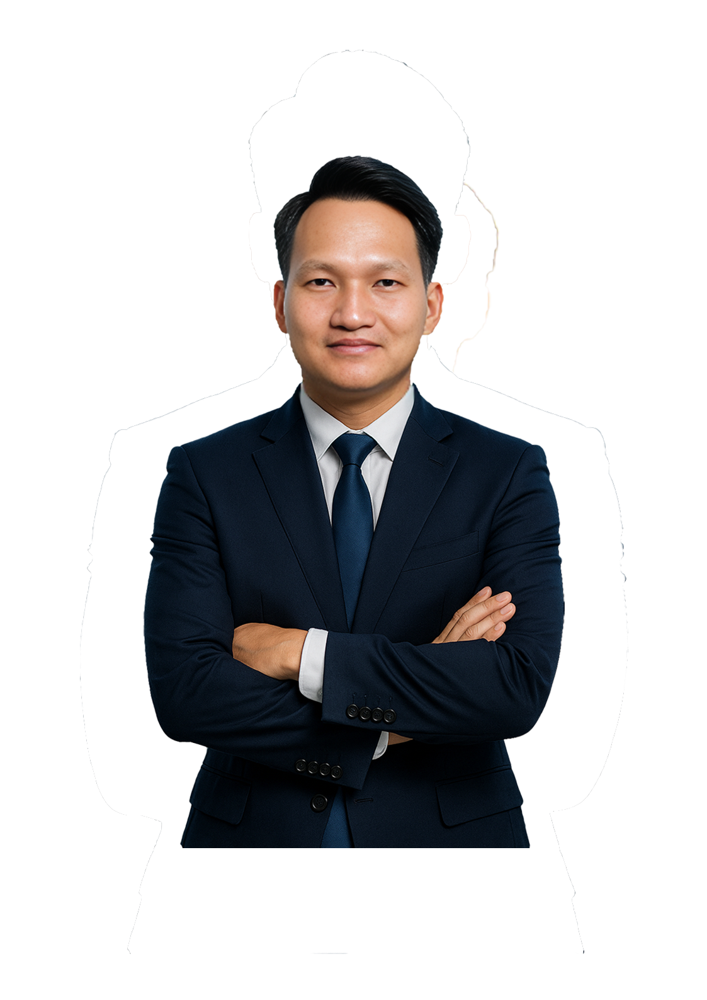

BUI XUAN KHU
BÙI XUÂN KHU
EducationTrình độ học vấn
Hanoi University of Natural Resources and Environment
Đại học Tài nguyên & Môi trường Hà Nội
Career ObjectiveMục tiêu nghề nghiệp
To leverage expertise in wastewater treatment to develop and improve high-efficiency treatment
technologies that minimize
construction and operational costs, delivering greater value to both users and businesses.
Tận dụng kinh nghiệm trong lĩnh vực xử lý nước thải để xây dựng phát triển cải tiến các công nghệ xử lý
nước thải đạt
hiệu suất cao, tiết kiệm chi phí xây dựng, tiết kiệm chi phí vận hành nhằm mang lại giá trị cho người
dùng và doanh
nghiệp.
SkillsKỹ
năng
AutoCAD, Revit, Project, Office (word, excel, ...)
AutoCAD, Revit, Project, Office (word, excel, ...)
Design, analysis, and planning
Thiết kế, phân tích, lập kế hoạch
Project Management
Quản lý dự án
Work ExperienceKinh nghiệm làm việc
Environmental Engineer - Nam Tai Thai Binh International Company Limited
Kỹ sư môi trường - Công ty TNHH Quốc tế Nam Tài Thái Bình
Mar, 2024 – Present03/2024 – Hiện
tại
- Work with government regulatory agencies on the implementation of environmental protection laws and environmental management regulations.
- Collaborate with industrial park clients to support them in addressing challenges and compliance issues related to environmental protection and environmental law implementation.
- Develop and improve procedures for the maintenance of wastewater treatment plants and drainage systems.
- Supervise the installation of wastewater treatment and drainage systems.
- Làm việc với các cơ quan quản lý nhà nước về vấn đề thực hiện các quy định Pháp luật về bảo vệ môi trường và quản lý môi trường.
- Làm việc với các Khách hàng trong KCN để hỗ tợ Khách hàng giải quyết các vướng mắc, khó khăn trong vấn đề bảo vệ môi trường và thực hiện pháp luật về bảo vệ Môi trường.
- Xây dựng quy trình và cải tiến quy trình bảo trì nhà máy XLNT và hệ thống thoát nước thải
- Giám sát việc lắp đặt các hệ thống XLNT và thoát nước thải
Environmental Engineer - Long Xuyen Construction and Environment Joint Stock Company
Kỹ sư môi trường - Công ty Cổ phần Xây dựng và Môi trường Long Xuyên
Feb, 2022 – Feb, 202402/2022 – 02/2024
- Conduct site surveys, design, prepare cost estimates, and develop design documentation for wastewater and air emission treatment systems.
- Perform engineering calculations, prepare technical reports, and develop process technology procedures.
- Prepare project schedules and shop drawings, and supervise on-site construction.
- Prepare billing, payment, and final settlement documentation.
- Provide operational training and facilitate technology transfer.
- Khảo sát, thiết kế, lập dự toán, triển khai hồ sơ thiết kế hệ thống xử lý nước thải, khí thải
- Tính toán, thuyết minh, thiết lập quy trình công nghệ
- Lập tiến độ, lập bản vẽ shopdrawing, giám sát thi công tại hiện trường
- Làm hồ sơ thanh, quyết toán
- Hướng dẫn vận hành, chuyển giao công nghệ
Environmental Engineer - Viet Nam Sustainable Development & Construction
Corporation
Kỹ sư môi trường - Công ty Cổ phần xây dựng và phát triển bền vững Việt
Nam
Jun, 2018 – Jan, 202206/2018 – 01/2022
- Conduct site surveys, design, prepare cost estimates, and develop design documentation for wastewater treatment systems.
- Perform engineering calculations, prepare technical reports, and develop process technology procedures.
- Prepare project schedules and shop drawings, and supervise on-site construction.
- Prepare billing, payment, and final settlement documentation.
- Provide operational training and facilitate technology transfer.
- Khảo sát, thiết kế, lập dự toán, triển khai hồ sơ thiết kế hệ thống xử lý nước thải
- Tính toán, thuyết minh, thiết lập quy trình công nghệ
- Lập tiến độ, lập bản vẽ shopdrawing, giám sát thi công tại hiện trường
- Làm hồ sơ thanh, quyết toán
- Hướng dẫn vận hành, chuyển giao công nghệ
Operation technician - SFC Investment Development For Enviroment
Corporation
Kỹ thuật viên vận hành - Công ty Cổ phần đầu tư phát triển môi trường SFC
Việt Nam
Oct, 2014 – May, 201810/2014 – 05/2018
tại
- Supervise the construction and installation of wastewater treatment systems.
- Operate wastewater treatment systems and facilitate technology transfer.
- Giám sát thi công hệ thống xử lý nước thải
- Vận hành và chuyển giao công nghệ hệ thống xử lý nước thải
Extracurricular Activities /
HobbiesHoạt động ngoại khóa / Sở thích
Attended professional events focused on environmental treatment
technologies, including wastewater, air emissions, and
solid waste.
Tham dự các sự kiện chuyên môn về công nghệ xử lý môi trường, bao gồm nước
thải, khí thải và chất thải rắn.
Engaged in environmental projects and biodiversity conservation conferences.
Tham gia các dự án, hội thảo về môi trường, bảo tồn đa dạng sinh học.
Enjoys photography, reading, and cycling.
Thích chụp ảnh, đọc sách và đạp xe.